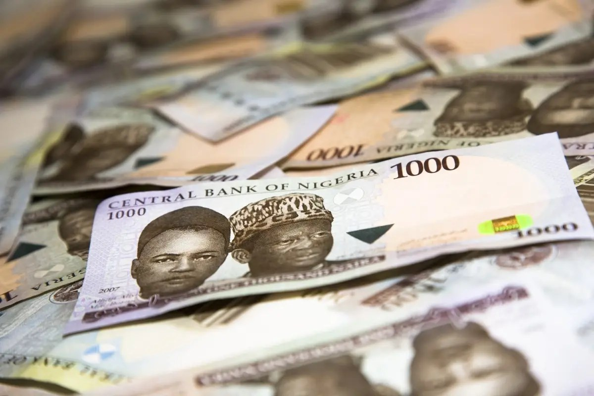

Naira holds the N1350/$ baseline despite attractive US yields

The naira settled at N1,349 per dollar in midweek trading after the US Federal Reserve kept its benchmark interest rate unchanged and signalled that borrowing costs could remain high. The decision supports the appeal of US assets, with Treasury yields near 5%, and the dollar index trading around 102.25 in early European hours on Thursday.
High US yields have helped constrain foreign portfolio investment into Nigerian bonds and other local assets, limiting one potential source of foreign exchange. At the same time, attractive nominal returns in Nigeria’s bond market may encourage risk-conscious investors to keep their holdings in naira, rather than convert them into dollars. The balance between those forces is one factor shaping the exchange rate.
Oil earnings provide another source of support. Nigerian crude was reported at about $115 a barrel, and higher export revenues could help the Central Bank of Nigeria build gross reserves and strengthen its capacity to manage external shocks. The CBN has also supplied foreign exchange directly to dealer banks to address backlogs and support liquidity in the market.
The exchange rate is expected to move within a N1,340–1,370 per dollar range in the near term, with CBN intervention and oil inflows providing support. Traders are also watching the next CBN Monetary Policy Committee meeting for signs of whether Nigerian rates could be cut, which might narrow the positive real-rate gap with the United States.
In the US, policymakers said they would rely on incoming data when deciding their next steps. Market attention is focused on the September personal consumption expenditures inflation report, due Friday. If inflation rises again and prompts the Fed to resume rate increases, outflows from Nigerian local debt could intensify, adding pressure to the naira.
Source: Nairametrics